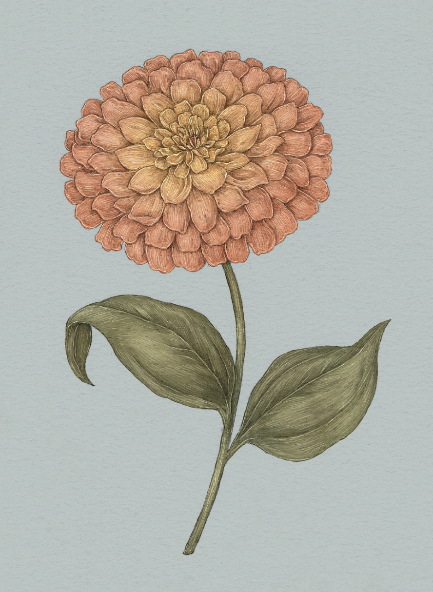

Plate ZINNIA
The Language of Flowers
Zinnia Study

Zinnia
Zinnia
Definition: A flower associated in floriography with everlasting friendship.
Meaning
Everlasting friendship
Origin
Because zinnias are easy to grow and reseed with abundance, the Victorians associated them with
everlasting friendship. A bouquet of zinnias was a common gift for a friend leaving on a trip. It was
meant to convey that the friend would be missed and thought of frequently while they were away.
Pair With
- Jasmine to tell a friend they bring you joy
- Chamomile to show appreciation for a friendship that has survived adversity